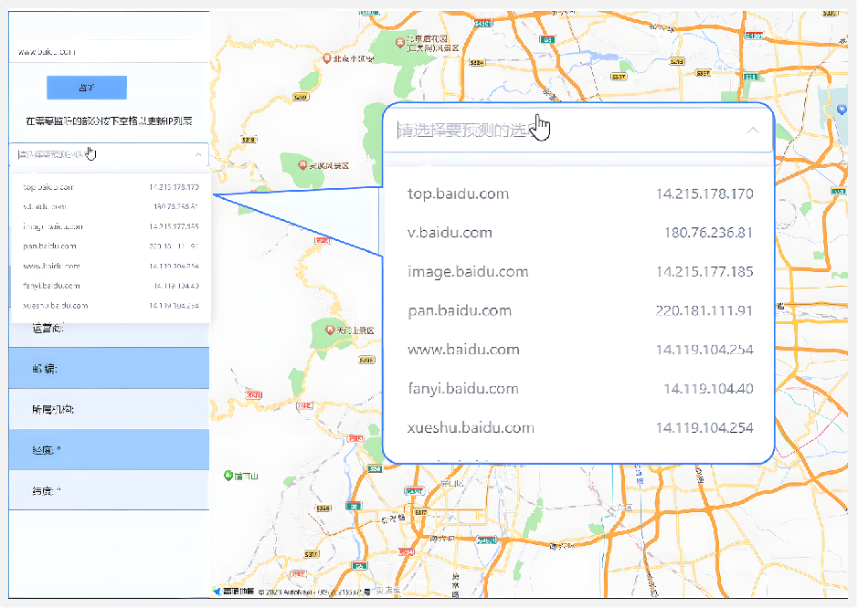
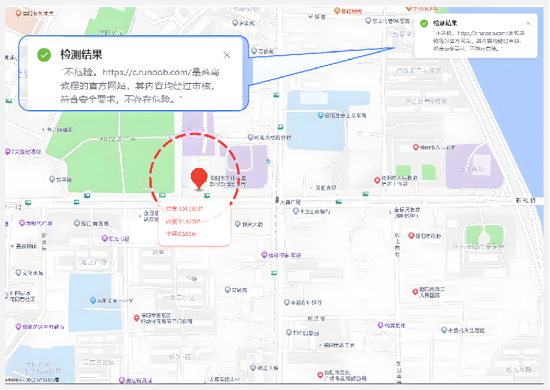
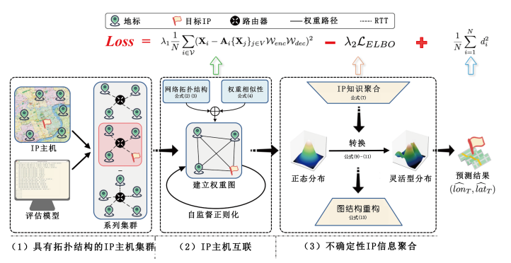
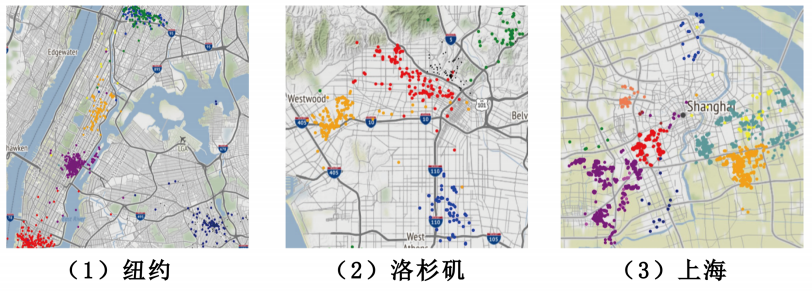
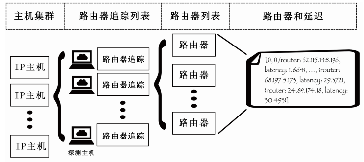
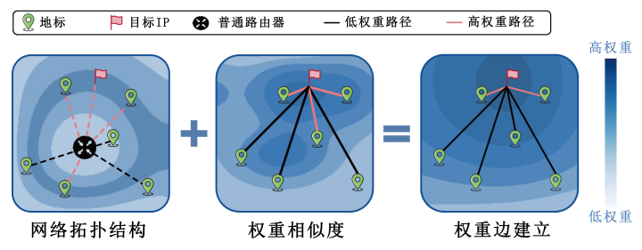
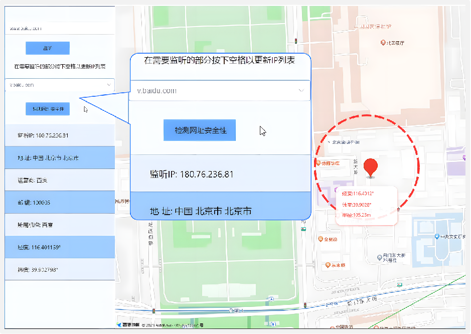
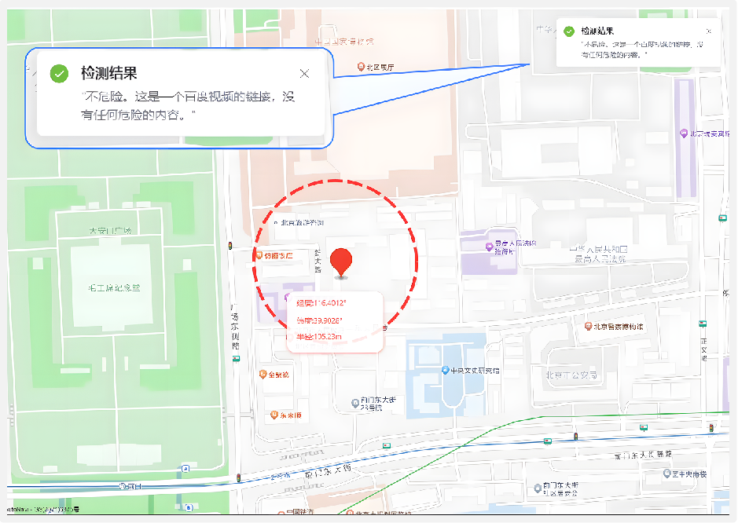

Introduction
The GNN4Route project tackles the significant challenges of fine-grained IP geolocation by introducing a novel framework that leverages Graph Neural Networks (GNNs). This project addresses the limitations of traditional IP geolocation methods, which often struggle with inaccuracies due to incomplete data, network complexity, and the dynamic nature of internet topologies.
The background of this project is rooted in the growing demand for precise IP geolocation across various industries, such as targeted advertising, fraud prevention, and logistics management. Traditional methods, which include database lookups and basic network measurements, often fall short in providing accurate and reliable geolocation results, particularly at the street level. The GNN4Route project was developed to overcome these limitations and achieve more accurate geolocation results.

- Graph-Based IP Geolocation: The project introduces the use of Graph Neural Networks to model the relationships between IP addresses and network topologies. By representing IP hosts and their connections as nodes and edges within a graph, GNN4Route captures the complex spatial and topological dependencies that are critical for accurate geolocation.
- Addressing Data Incompleteness and Uncertainty: The model incorporates a self-paced graph contrastive learning approach and Gaussian Mixture Model-based graph convolutional networks (GCNmf) to handle missing data and uncertainty in network measurements. This ensures that the model can maintain accuracy even in the presence of incomplete or noisy data.
- Innovative Uncertainty-Aware Modeling: GNN4Route introduces an uncertainty-aware approach that factors in the inherent noise and instability in network measurements. By constructing probability distributions for predicted locations, the model provides not just location estimates, but also a measure of confidence for each prediction, making it more reliable for real-world applications.
- Visual and Interactive Tools: The project includes a frontend interface that integrates with mapping services like Gaode Maps, enabling users to interactively visualize geolocation results. This makes the system accessible and user-friendly, catering to both technical and non-technical users.
Overall, the GNN4Route project represents a significant innovation in the field of IP geolocation. By integrating advanced GNN techniques with robust handling of data uncertainty and missing information, the project sets a new standard for accurate and reliable IP geolocation at the street level.
Detailed Information

The GNN4Route project introduces a cutting-edge approach to fine-grained IP geolocation by leveraging advanced graph neural networks (GNNs) and innovative data processing techniques. The model is designed to address the challenges of accurately predicting IP locations at the street level, even in complex and dynamic network environments. The implementation of the model is structured into several key modules, each contributing to the overall functionality and precision of the system.
The implementation of the GNN4Route model can be divided into the following modules:
- IP Host Topology Clustering: This module focuses on identifying and clustering IP hosts based on their topological relationships within the network. By grouping IP hosts with similar network characteristics, the model can create a more accurate representation of the network structure, which is crucial for effective geolocation.
- IP Host Connectivity Analysis: This module analyzes the connections between IP hosts to establish the network's topology. By mapping out the connections, the model can better understand the spatial and logical relationships between different nodes, enhancing the accuracy of location predictions.
- Uncertainty-Aware IP Attribute Aggregation: Given the inherent noise and uncertainty in network measurements, this module aggregates IP attributes in a way that accounts for these uncertainties. By incorporating uncertainty into the model, it can make more robust predictions that are less affected by the noise present in real-world data.
- Self-Paced Graph Contrastive Learning: To handle the incomplete and dynamic nature of network data, this module employs a self-paced graph contrastive learning algorithm. This approach allows the model to dynamically adjust and refine the graph structure, ensuring that even with missing data, the model can still produce accurate geolocation predictions.
- GCNmf Model for Missing Data Handling: The model uses a Gaussian Mixture Model (GMM) within the Graph Convolutional Network (GCN) to handle missing data. This innovative approach ensures that the model remains accurate and effective even when some data points are unavailable or incomplete.
- Probability Distribution Construction: To further enhance the robustness of the geolocation predictions, this module constructs probability distributions for the predicted locations. This allows the model to express its confidence in each prediction, providing users with a measure of uncertainty alongside the geolocation results.
- Prediction and Training Algorithms: The final module involves the training and prediction algorithms used to fine-tune the model and generate geolocation predictions. These algorithms are optimized to handle large-scale, real-world datasets, ensuring that the model performs well in practical applications.



Each of these modules plays a critical role in ensuring that the GNN4Route model can deliver highly accurate and reliable IP geolocation results. By integrating advanced machine learning techniques with robust data processing methods, the project sets a new standard for IP geolocation technology.
Project Achievements


The GNN4Route project has made significant strides in advancing the field of IP geolocation by leveraging the power of graph neural networks (GNNs) to achieve fine-grained location predictions. The project's outcomes are not only innovative but also highly impactful, setting new benchmarks in the accuracy and efficiency of IP geolocation technologies.
The following key achievements summarize the core outcomes of the GNN4Route project:
- Achieving Fine-Grained IP Geolocation: The project successfully developed a model capable of predicting IP locations with street-level accuracy. This fine-grained geolocation is a significant improvement over traditional methods, which often provide only city-level or regional estimates. This advancement opens up new possibilities for applications that require precise location data, such as targeted advertising, logistics, and fraud prevention.
- Robust Handling of Missing and Noisy Data: One of the major challenges in IP geolocation is dealing with incomplete and noisy data. GNN4Route addresses this challenge by incorporating advanced techniques like self-paced graph contrastive learning and GCNmf (Gaussian Mixture Model-based Graph Convolutional Networks). These innovations ensure that the model remains accurate and reliable even when dealing with real-world data imperfections.
- Integration of Uncertainty Estimation: The project includes a novel approach to uncertainty estimation, allowing the model to provide not only location predictions but also a confidence measure for each prediction. This feature is crucial for applications where the reliability of location data is critical, providing users with a clearer understanding of the model's predictions.
- User-Friendly Visualization and Interaction: GNN4Route is complemented by a frontend platform that integrates with mapping services like Gaode Maps. This platform enables users to visualize geolocation predictions interactively, making the model's outcomes accessible and actionable for both technical and non-technical users.
- Scalability and Practical Application: The model is designed to handle large-scale datasets, ensuring that it can be applied effectively in various practical scenarios. Its scalability makes it suitable for use in diverse fields, ranging from cybersecurity to urban planning.
In summary, the GNN4Route project represents a significant advancement in the field of IP geolocation. Its innovative use of graph neural networks, coupled with robust data handling and user-friendly tools, has the potential to revolutionize how IP locations are predicted and utilized across various industries.